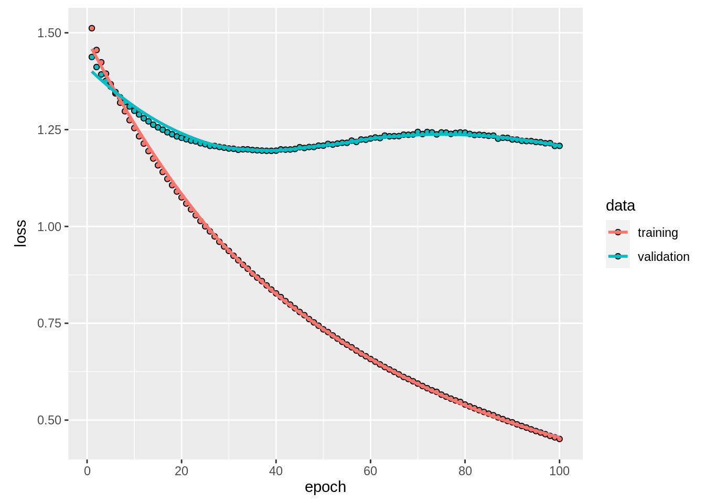
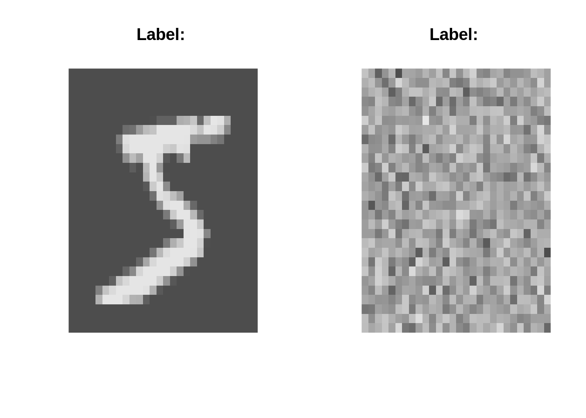

4 Deep learning
4.1 Deep Neural Networks
This lecture today is about deep neural networks. We will first look at regularization in deep neural networks and then explore convolutional neural networks. ### Dropout and Early stopping Regularization in deep neural networks is very important because the problem of overfitting. Standard regularization from statistics like l1 and l2 regularization are often feasy and require a lot of tuning. There are more stable and robust methods:
- Early stopping: Early stopping allows us to stop the training when for instance the test loss does not increase anymore
- Dropout: The Dropout layer randomly sets input units to 0 with a frequency of rate at each step during training time, which helps prevent overfitting. Dropout is more robust than l1 and l2, and tuning of the dropout rate can be beneficial but a rate between 0.2-0.5 works often quite well
4.2 Convolutional Neural Networks - MNIST
We will show the use of convolutinal neural networks with the MNIST dataset.The MNIST dataset is maybe one of the most famous image datasets. It is a dataset of 60,000 handwritten digits from 0-9.
To do so, we define a few helper functions:
library(keras)
rotate = function(x) t(apply(x, 2, rev))
imgPlot = function(img, title = ""){
col=grey.colors(255)
image(rotate(img), col = col, xlab = "", ylab = "", axes=FALSE, main = paste0("Label: ", as.character(title)))
}The dataset is so famous that there is an automatic download function in keras:
data = dataset_mnist()
train = data$train
test = data$testLet’s visualize a few digits:
par(mfrow = c(3,3))
.n = sapply(1:9, function(x) imgPlot(train$x[x,,], train$y[x]))
Similar to the normal ML workflow, we have to scale the pixels (from 0-255) to the range of [0,1] and one hot encode the response. To scale the pixels, we will use arrays instead of matrices. Arrays are called tensors in mathematics and a 2d array/tensor is typically called a matrix.
train_x = array(train$x/255, c(dim(train$x), 1))
test_x = array(test$x/255, c(dim(test$x), 1))
train_y = to_categorical(train$y, 10)
test_y = to_categorical(test$y, 10)The last dimension stands for the number of channels in the image. In our case we have only one channel because the images are white-black.
Normally we would have three channels - colors are encoded by the combination of three base colors (usually red,green,blue).
To build our convolutional model, we have to specify a kernel. In our case, we will use 16 convolutional kernels (filters) of size 2x2. These are 2D kernels because our images are 2D. For movies for example, one would use a 3D kernel (the third dimension would correspond to time and not to the color channels).
model = keras_model_sequential()
model %>%
layer_conv_2d(input_shape = c(28L, 28L,1L),filters = 16L, kernel_size = c(2L,2L), activation = "relu") %>%
layer_max_pooling_2d() %>%
layer_conv_2d(filters = 16L, kernel_size = c(3L,3L), activation = "relu") %>%
layer_max_pooling_2d() %>%
layer_flatten() %>%
layer_dense(100L, activation = "relu") %>%
layer_dense(10L, activation = "softmax")
summary(model)## Model: "sequential_5"
## __________________________________________________________________________________________________________________________________
## Layer (type) Output Shape Param #
## ==================================================================================================================================
## conv2d (Conv2D) (None, 27, 27, 16) 80
## __________________________________________________________________________________________________________________________________
## max_pooling2d (MaxPooling2D) (None, 13, 13, 16) 0
## __________________________________________________________________________________________________________________________________
## conv2d_1 (Conv2D) (None, 11, 11, 16) 2320
## __________________________________________________________________________________________________________________________________
## max_pooling2d_1 (MaxPooling2D) (None, 5, 5, 16) 0
## __________________________________________________________________________________________________________________________________
## flatten (Flatten) (None, 400) 0
## __________________________________________________________________________________________________________________________________
## dense_14 (Dense) (None, 100) 40100
## __________________________________________________________________________________________________________________________________
## dense_15 (Dense) (None, 10) 1010
## ==================================================================================================================================
## Total params: 43,510
## Trainable params: 43,510
## Non-trainable params: 0
## __________________________________________________________________________________________________________________________________We additionally used a pooling layer to downsize the resulting feature maps. After another convolutional and pooling layer we flatten the output, i.e. the following dense layer treats the previous layer as a full layer (so the dense layer is connected to all weights from the last feature maps).Having flattened the layer, we can simply use our typical output layer.
The rest is as usual: First we compile the model.
model %>%
compile(
optimizer = keras::optimizer_adamax(0.01),
loss = loss_categorical_crossentropy
)
summary(model)## Model: "sequential_5"
## __________________________________________________________________________________________________________________________________
## Layer (type) Output Shape Param #
## ==================================================================================================================================
## conv2d (Conv2D) (None, 27, 27, 16) 80
## __________________________________________________________________________________________________________________________________
## max_pooling2d (MaxPooling2D) (None, 13, 13, 16) 0
## __________________________________________________________________________________________________________________________________
## conv2d_1 (Conv2D) (None, 11, 11, 16) 2320
## __________________________________________________________________________________________________________________________________
## max_pooling2d_1 (MaxPooling2D) (None, 5, 5, 16) 0
## __________________________________________________________________________________________________________________________________
## flatten (Flatten) (None, 400) 0
## __________________________________________________________________________________________________________________________________
## dense_14 (Dense) (None, 100) 40100
## __________________________________________________________________________________________________________________________________
## dense_15 (Dense) (None, 10) 1010
## ==================================================================================================================================
## Total params: 43,510
## Trainable params: 43,510
## Non-trainable params: 0
## __________________________________________________________________________________________________________________________________Then, we train the model:
epochs = 5L
batch_size = 32L
model %>%
fit(
x = train_x,
y = train_y,
epochs = epochs,
batch_size = batch_size,
shuffle = TRUE,
validation_split = 0.2
)4.2.1 Data Augmentation
Having to train a CNN using very little data is a common problem. Data augmentation helps to artificially increase the number of images.
The idea is that a CNN learns specific structures such as edges from images. Rotating, adding noise, and zooming in and out will preserve the overall key structure we are interested in, but the model will see new images and has to search once again for the key structures.
Luckily, it is very easy to use data augmentation in keras.
To show this, we will use again the MNIST dataset. We have to define a generator object (it is a specific object which infinitly draws samples from our dataset). In the generator we can turn on the data augementation. However, now we have to set the step size (steps_per_epoch) because the model does not know the first dimension of the image.
aug = image_data_generator()
generator = flow_images_from_data(train_x, train_y,generator = aug, batch_size = 100L)
model %>%
fit(generator, steps_per_epoch = floor(dim(train_x)[1]/100L),epochs = 1L)So using data augmentation, we can artificially increase the number of images.
4.2.2 Transfer learning
Another approach to reduce the necessary number of images or to speed up convergence of the models is the use of transfer learning.
The main idea of transfer learning is that all the convolutional layers have mainly one task - learning to identify highly correlated neighbored features and therefore these learn structures such as edges in the image and only the top layer, the dense layer is the actual classifier of the CNN. Thus, one could think that we could only train the top layer as classifier. To do so, it will be confronted by sets of different edges/structures and has to decide the label based on these.
Again, this sounds very complicating but is again quite easy with keras:
We will do this now with the CIFAR10 data set, so we have to prepare the data:
data = keras::dataset_cifar10()
train = data$train
test = data$test
image = train$x[5,,,]
image %>%
image_to_array() %>%
`/`(., 255) %>%
as.raster() %>%
plot()
train_x = array(train$x/255, c(dim(train$x)))
test_x = array(test$x/255, c(dim(test$x)))
train_y = to_categorical(train$y, 10)
test_y = to_categorical(test$y, 10)Keras provides download functions for all famous architectures/CNN models which are already trained on the imagenet dataset (another famous dataset). These trained networks come already without their top layer, so we have to set include_top to false and change the input shape.
densenet = application_densenet201(include_top = FALSE, input_shape = c(32L, 32L, 3L))Now, we will use not a sequential model but just a “keras_model” where we can specify the inputs and outputs. Thereby, the outputs are our own top layer, but the inputs are the densenet inputs, as these are already pre-trained.
model = keras::keras_model(inputs = densenet$input, outputs =
layer_flatten(layer_dense(densenet$output, units = 10L, activation = "softmax"))
)In the next step we want to freeze all layers except for our own last layer (with freezing I mean that these are not trained: we do not want to train the complete model, we only want to train the last layer). You can check the number of trainable weights via summary(model)
model %>% freeze_weights(to = length(model$layers)-1)
summary(model)And then the usual training:
model %>%
compile(loss = loss_categorical_crossentropy, optimizer = optimizer_adamax())
model %>%
fit(
x = train_x,
y = train_y,
epochs = 1L,
batch_size = 32L,
shuffle = T,
validation_split = 0.2,
)We have seen, that transfer-learning can easily be done using keras.